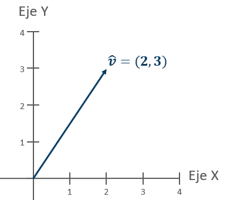
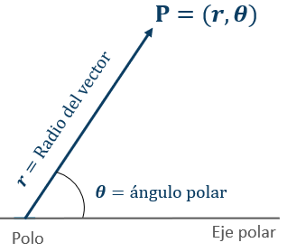
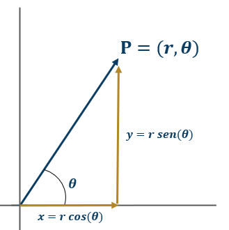
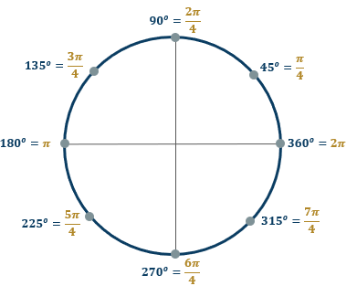
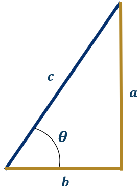

5 Vectores y plano cartesiando
Un vector se define como una colección ordenada de datos, lo que resulta fundamental para analizar fenómenos en matemáticas y física. Estos vectores pueden representarse a través de un sistema cartesiano rectangular (plano \(x\; y\)) o mediante un sistema de coordenadas polares, todo depende de las exigencias específicas de cada disciplina.
5.1 Componentes de un vector
En matemáticas, es común representar un vector con una notación específica que utiliza una letra en negrita con una flecha sobre ella, como \(\vec{\mathbf{v}}\). Cada componente del vector se denota usando la misma letra seguida de un subíndice, que indica su posición. Por ejemplo, para un vector bidimensional \(\vec{\mathbf{v}}\), lo expresamos de la siguiente manera: \(\vec{\mathbf{v}} = (v_1, v_2)\). Si \(v_1 = 2\) y \(v_2 = 3\), entonces el vector se representa como \(\vec{\mathbf{v}} = (2, 3)\).
Visualmente, los vectores pueden ser representados en un plano. Tomemos como ejemplo el vector anterior: su representación gráfica en el plano \(xy\) sería la siguiente:

5.2 Operaciones básicas
Los vectores son estructuras fundamentales en matemáticas, constituidos por conjuntos ordenados de datos que facilitan la ejecución de diversas operaciones matemáticas. Entre las operaciones más frecuentes se encuentran la suma, la resta y la multiplicación por escalares. Al sumar o restar vectores, los cálculos se realizan componente a componente. En cuanto a la multiplicación por un escalar, cada elemento del vector se multiplica de manera individual por el valor del escalar. Estas operaciones son esenciales para manipular y analizar vectores en diversos contextos matemáticos.
Si tenemos los vectores \(\vec{\mathbf{e}}=(-2,3,1)\) y \(\vec{\mathbf{w}}=(2,-4,4)\), entonces podemos calcular:
\(2\;\vec{\mathbf{e}}+\vec{\mathbf{w}}\)
\[ 2\;(-2,3,1)+(2,-4,4)\;=\;\underbrace{(-4,6,2)}_{\text{multiplico el}\\\text{vector por 2}}+(2,-4,4)\;=\;\underbrace{(-4+2,6-4,2+4)}_{\text{sumo entrada a entrada}}\;=\;(-2,2,6) \]
\(\vec{\mathbf{e}}-\vec{\mathbf{w}}\)
\[ \vec{\mathbf{e}}-\vec{\mathbf{w}}\;=\;(-2,3,1)-(2,-4,4)\;=\;\underbrace{(-2-2,3+4,1-4)}_{\text{aplico leyes de los signos}\\\text{y resto entrada a entrada}}\;=\;(-4,7,-3) \]
\(-\frac{1}{2}\vec{\mathbf{e}}-3\;\vec{\mathbf{w}}\)
\[ -\frac{1}{2}(-2,3,1)-3\;(2,-4,4)=\left(1,-\frac{3}{2},-\frac{1}{2}\right)-(6,-12,12)\;=\;\left(1-6,-\frac{3}{2}+12,-\frac{1}{2}-12\right)\;=\; \left(-5,\frac{21}{2},-\frac{25}{2}\right) \]
5.3 Coordenadas polares
Si bien un punto en el plano cartesiano puede describirse mediante sus coordenadas \(x\) y \(y\), el sistema de coordenadas polares ofrece una alternativa valiosa para representar vectores. En este sistema, se designa una línea como el eje polar y un punto fijo como el polo. Desde el polo, se traza una línea hasta un punto determinado en el espacio, denominada vector.
En las coordenadas polares, el radio vector, comúnmente representado por \(r\), indica la longitud de la flecha y refleja la magnitud o módulo del vector. La dirección del vector, o ángulo polar, denota la inclinación del vector respecto a un eje de referencia, y se representa habitualmente por la letra griega \(\theta\). Por lo tanto, un punto \(P\) en este sistema se expresa como \(P=(r, \;\theta)\), proporcionando una representación gráfica clara y precisa del punto en relación con el polo y el eje polar.

Podemos usar indistintamente las coordenadas polares o el sistema cartesiano, pero con frecuencia es necesario pasar de un sistema a otro. Las fórmulas para realizar esta transición son:
\[ x=r\;cos(\theta)\\ y=r\;sen(\theta) \]
Aquí, \(r\) es la magnitud del vector y \(\theta\) es el ángulo que forma con el eje positivo \(x\), medido en radianes o grados.
Gráficamente, lo que tenemos es lo siguiente:

Para comprender cómo pasar de coordenadas polares a cartesianas y viceversa, empecemos con un ejemplo claro. Consideremos un punto \(P\) cuyas coordenadas polares son \(P=(-2,135^\circ)\). Aquí, el primer componente, \(-2\), indica una magnitud negativa y el segundo componente, \(135^\circ\), el ángulo en relación con el eje positivo de las \(x\). Esto significa que el vector apunta en la dirección de 135 grados desde el origen pero con una magnitud de 2 en sentido contrario.
Para convertir estas coordenadas polares en cartesianas, usamos las siguientes fórmulas:
\[ x = r \cos(\theta) = -2 \cos(135^\circ) = (-2) \left(-\frac{\sqrt{2}}{2}\right) = \sqrt{2}\\ y = r \sin(\theta) = -2 \sin(135^\circ) = (-2) \left(\frac{\sqrt{2}}{2}\right) = -\sqrt{2} \]
Así, el punto en coordenadas polares \(P=(-2,135^\circ)\) se traduce a coordenadas cartesianas como \(P=(\sqrt{2}, -\sqrt{2})\).
Ahora, consideremos el caso contrario: convertir de coordenadas cartesianas a polares. Supongamos que tenemos un punto \(Q\) con coordenadas cartesianas \((-3,-2)\). Para pasar a coordenadas polares, utilizamos:
\[ r = \sqrt{x^2 + y^2} = \sqrt{(-3)^2 + (-2)^2} = \sqrt{13} \approx 3.6\\ \theta = \arctan\left(\frac{y}{x}\right) = \arctan\left(\frac{-2}{-3}\right) = \arctan\left(\frac{2}{3}\right) \approx 0.58 \text{ radianes} \]
Nótese que se toma la parte positiva de la raíz, pues \(p=(r, \theta)\) es un punto diferente a \(p'=(-r, \theta)\).
Finalmente, consideremos un Ejemplo práctico. Imaginemos que un carro se desplaza a \(30 \, km/h\) formando un ángulo de \(45^\circ\) respecto al punto de origen. Para encontrar los componentes del vector de velocidad en el plano cartesiano, aplicamos:
\[ x = r \cos(\theta) = 30 \cos(45^\circ) = 21.21\\ y = r \sin(\theta) = 30 \sin(45^\circ) = 21.21 \]
5.4 Radianes y grados
Cambiar de radianes a grados es una tarea común en matemáticas y física, ya que cada sistema se adapta mejor a diferentes situaciones. Para pasar de radianes a grados, usamos la siguiente fórmula:
\[ \text{Grados} = \text{Radianes} \times \left(\frac{180^\circ}{\pi}\right) \]
Gráficamente, la equivalencia es la siguiente:

Por ejemplo, para convertir \(1\) radian a grados, calculamos:
\[ 1 \times \left(\frac{180^\circ}{\pi}\right) \approx 57.2958^\circ \]
En el caso contrario, para convertir grados a radianes, utilizamos:
\[ \text{Radianes} = \text{Grados} \times \left(\frac{\pi}{180^\circ}\right) \]
Así, \(45^\circ\) convertido a radianes sería:
\[ 45^\circ \times \left(\frac{\pi}{180^\circ}\right) = \frac{\pi}{4} \text{ radianes} \]
5.5 Ángulos y el Teorema de Pitágoras
El Teorema de Pitágoras es un pilar fundamental en geometría y se utiliza ampliamente para resolver problemas relacionados con triángulos rectángulos. El teorema establece que en un triángulo rectángulo, el cuadrado de la longitud de la hipotenusa \(c\) es igual a la suma de los cuadrados de las longitudes de los otros dos lados \(a\) y \(b\):
\[ c^2 = a^2 + b^2 \]

Este teorema también es útil para calcular ángulos en triángulos rectángulos usando las funciones trigonométricas seno, coseno y tangente. Por ejemplo, el ángulo \(\theta\) entre la hipotenusa y uno de los lados puede encontrarse mediante:
\[ \cos(\theta) = \frac{a}{c}\qquad \quad \sin(\theta) = \frac{b}{c}\qquad \quad \tan(\theta) = \frac{b}{a} \]
Si conocemos dos lados de un triángulo rectángulo, podemos calcular el ángulo usando la función arco tangente:
\[ \theta = \arctan\left(\frac{b}{a}\right) \]
Estas fórmulas no solo nos permiten resolver triángulos sino también entender mejor la relación entre los ángulos y las longitudes en geometría euclidiana.
5.6 Ejemplos
Ejemplo 1
Convierte el punto \(P = (5, 60^\circ)\) de coordenadas polares a coordenadas cartesianas.
Para realizarlo, utilizamos las fórmulas \(x = r \cos(\theta)\) y \(y = r \sin(\theta)\), donde \(r\) es la distancia al origen y \(\theta\) el ángulo medido en grados.
Sustituimos los valores: \(r = 5\) y \(\theta = 60^\circ\). Entonces, \(x = 5 \cdot \cos(60^\circ)\) y \(y = 5 \cdot \sin(60^\circ)\). Sabemos que \(\cos(60^\circ) = \frac{1}{2}\) y \(\sin(60^\circ) = \frac{\sqrt{3}}{2}\).
Al realizar los cálculos, obtenemos \(x = 5 \cdot \frac{1}{2} = 2.5\) y \(y = 5 \cdot \frac{\sqrt{3}}{2} \approx 4.33\). Por lo tanto, el punto en coordenadas cartesianas es \(P = (2.5, 4.33)\).
Ejemplo 2
Encuentra la hipotenusa de un triángulo rectángulo con lados \(a = 6\) y \(b = 8\).
Aplicando el teorema de Pitágoras, el cual establece que \(c^2 = a^2 + b^2\), donde \(c\) es la hipotenusa y \(a\), \(b\) son los catetos.
Entonces, sustituimos: \(c^2 = 6^2 + 8^2 = 36 + 64 = 100\).
Al tomar la raíz cuadrada positiva de \(c^2 = 100\), obtenemos \(c = \sqrt{100} = 10\). Por lo tanto, la hipotenusa del triángulo mide 10 unidades.
Ejemplo 3
Calcula la magnitud del vector \(\vec{v} = (-3, 4)\).
La magnitud se encuentra usando \(|\vec{v}| = \sqrt{x^2 + y^2}\), donde \(x\) y \(y\) son las componentes del vector. Sustituyendo \(x = -3\) y \(y = 4\), tenemos \(|\vec{v}| = \sqrt{(-3)^2 + 4^2} = \sqrt{9 + 16} = \sqrt{25}\).
El resultado de la raíz es \(|\vec{v}| = 5\). Esto significa que la magnitud o longitud del vector \(\vec{v}\) es de 5 unidades.
Ejemplo 4
Convierte el punto \(Q = (-4, 3)\) de coordenadas cartesianas a coordenadas polares.
Primero, calculamos la magnitud \(r\) con la fórmula \(r = \sqrt{x^2 + y^2}\). Sustituyendo \(x = -4\) y \(y = 3\), obtenemos \(r = \sqrt{(-4)^2 + 3^2} = \sqrt{16 + 9} = \sqrt{25} = 5\).
Para encontrar el ángulo \(\theta\), utilizamos \(\theta = \arctan\left(\frac{y}{x}\right)\).
Esto nos da \(\theta = \arctan\left(\frac{3}{-4}\right) \approx 143.13^\circ\), teniendo en cuenta que el punto está en el segundo cuadrante. Por lo tanto, las coordenadas polares son \(Q = (5, 143.13^\circ)\).
Ejemplo 5
Dados los vectores \(\vec{u} = (2, -1, 3)\) y \(\vec{v} = (-1, 4, 2)\), calcula su suma.
Sumamos las componentes correspondientes: \(\vec{u} + \vec{v} = (2 + (-1), -1 + 4, 3 + 2) = (1, 3, 5)\).
El resultado de la suma es \(\vec{u} + \vec{v} = (1, 3, 5)\), lo cual representa un nuevo vector con estas componentes, resultado de combinar los vectores originales.